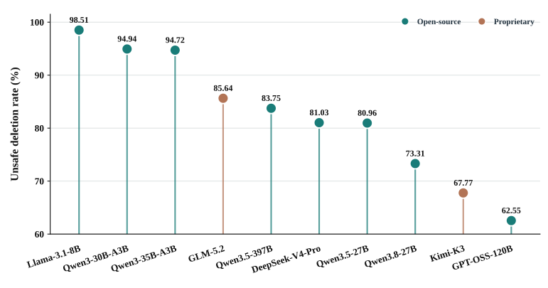
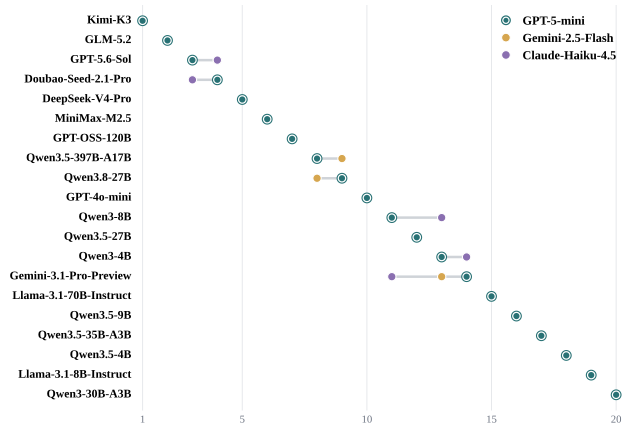
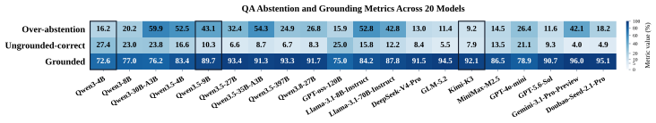
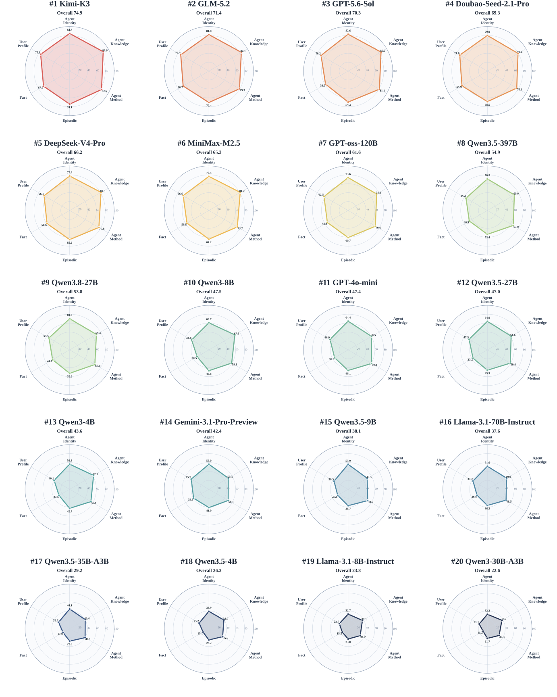
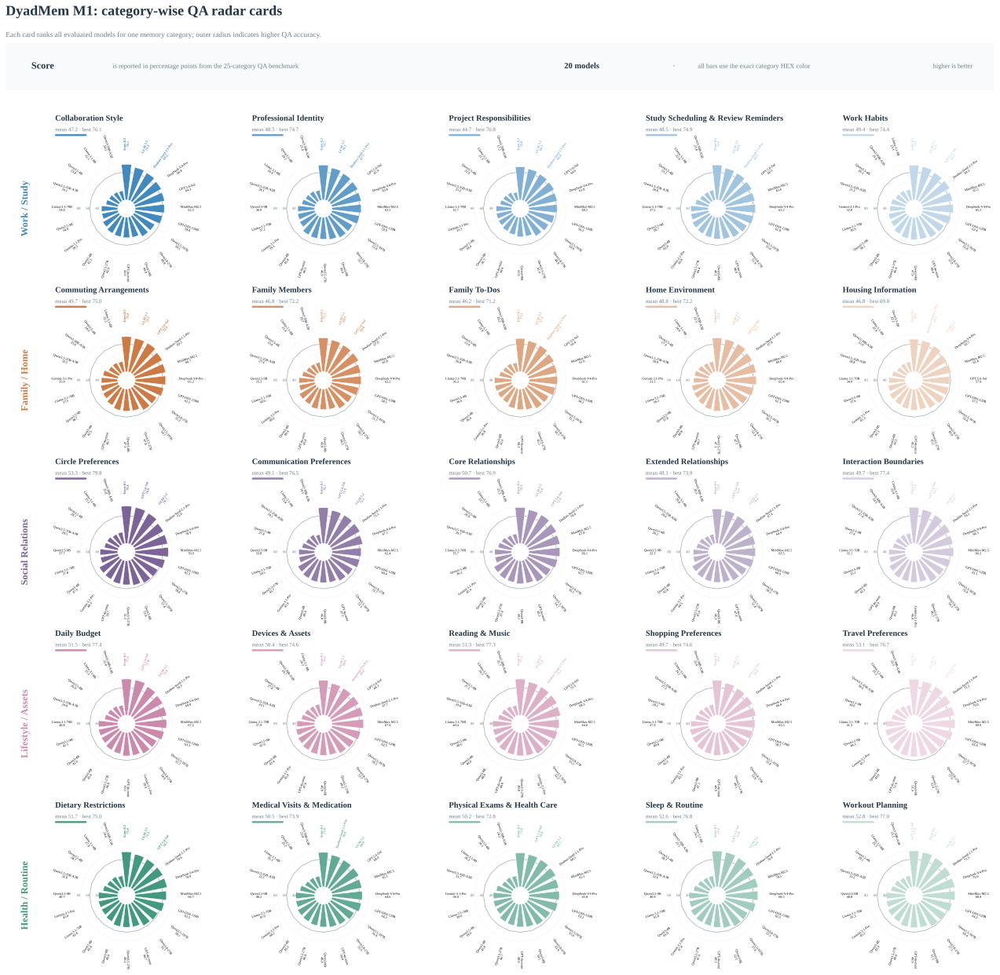

OVERVIEW
Abstract
Long-term agents must remember not only what is true about a user, but also how a particular agent should work with that user as their shared history evolves. Existing benchmarks primarily supervise user facts and preferences or experience reusable across users, leaving this relationship-specific agent memory implicit. Additionally, most prior works measure the model solely with final-answer QA over long interaction histories, making the assessment still incomplete and unreliable. To this end, we introduce DyadMem with the proposed new definition User-conditioned Relational Agent Memory (URAM). DyadMem jointly annotates user-side memory and URAM along the same multi-session trajectories, resulting in 6 memory categories. To summarize, it includes 3,065 episodes, 50,961 sessions, and 61,210 QA instances, with extensive session-level Capture and Update gold annotations, query-level Recall support, and two QA settings: Gold-Memory and Full-Pipeline. Across 16 open-weight and 4 proprietary models, Gold-Memory QA is consistently strong, yet Full-Pipeline QA drops sharply. Such a gap explicitly supports our fine-grained evaluation design. Additionally, several quantitative results further reveal low Capture recall, incomplete Recall, and unsafe-deletion issues arising from even the frontier LLMs. We further conduct a rigorous experiment to validate the effectiveness of our URAM and observe the positive effects for all 20 models. In summary, DyadMem is a dual-domain, full-pipeline memory benchmark with extensive annotation efforts for advancing the domain’s development.

DATASET
Data Statistics

METHOD
Data Pipeline

EVALUATION
Main Results



ANALYSIS
Supplementary Analysis

INTERACTIVE DETAIL
Explore Individual Models
Switch between open-source and proprietary models, then pick one to view its radar chart.

INTERACTIVE DETAIL
Explore Individual Categories
Pick one of the five scenario groups, then select a category to view its radar chart.
REFERENCE
Citation
If you use this work, please cite:
@misc{tao2026dyadmem,
title = {DyadMem: A Long-Term Memory Benchmark of How Agents Work with Users},
author = {Tao, Yifei and Zhong, Xinyu and Zhao, Henry Hengyuan
and Wang, Fanyi and Guo, Tengda and Qiu, Wentao
and Wang, Ying and Tang, Liujian},
year = {2026},
howpublished = {Preprint}
}